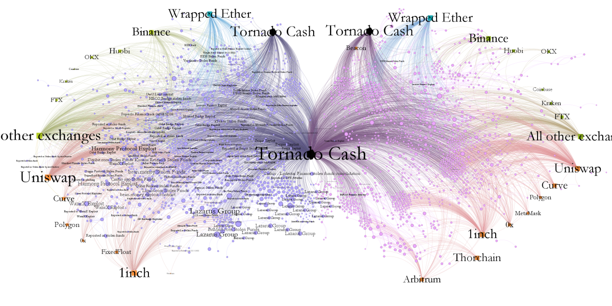
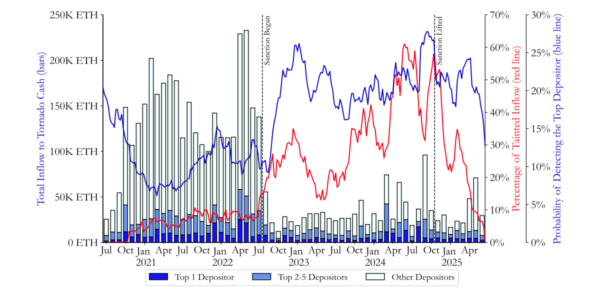
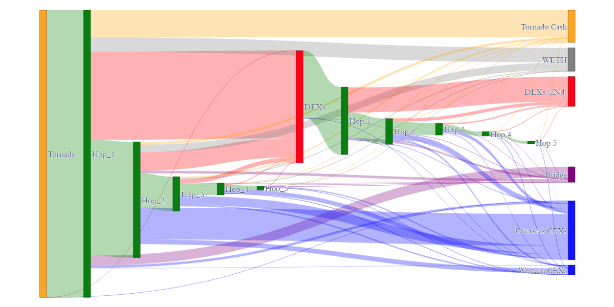
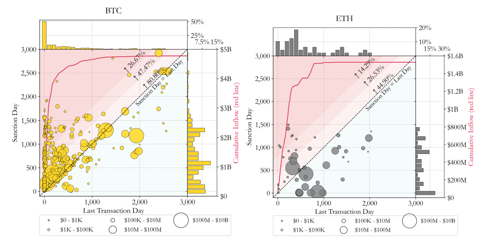
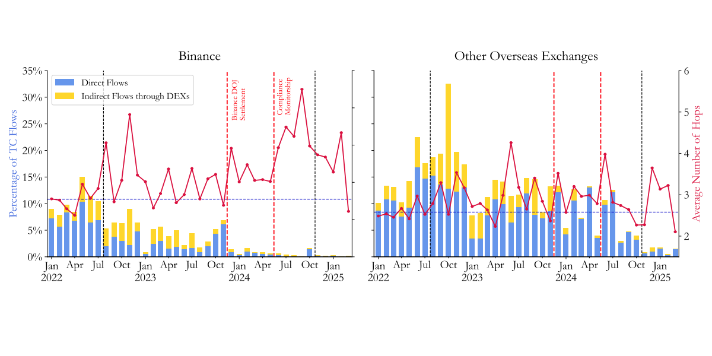
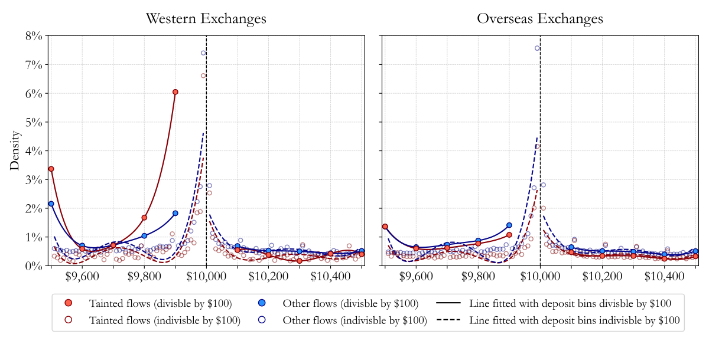
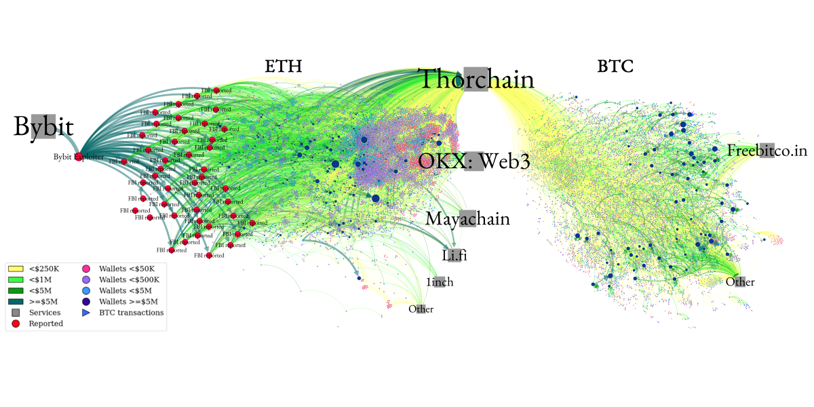

Are Crypto Anti-Money Laundering Policies Effective?
We evaluate four major types of crypto enforcement actions and find they are largely effective, particularly sanctions against services: illicit activity shrinks, laundering becomes costlier, and criminal funds move toward channels that are easier to trace and seize.
Presentations: Asian Blockchain & Crypto Conference; FIRS; NBER Economic Analysis of Regulation; MFA; CEAR-CenFIS Conference; JOIM Conference; NFA; SITE Financial Regulation; OSU, Seminar







1 / 7
Select student comments